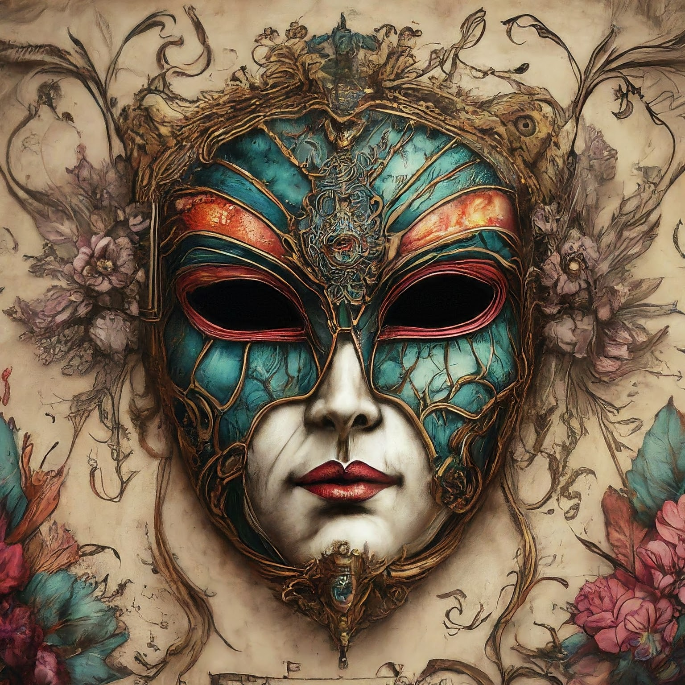

A curious history hath the coded ballroom. I recall a text detailing in meticulous detail the dance that is traditional within its halls.
A dance of such curious precision, that only a madman could decipher its meaning.
But alas, I find myself only pondering deeper its hidden secrets.
Just the other day, fate drew me to observe in extreme fortune but a small portion of the ceremony.
While coming near the building, I heard the distinct voice of the ceremony master call out such a curious phrase. "THE BARON DOTH GAZE SOUR TOWARD STEAMED PUDDING COLD"
And then, not 10 minutes later, a steady stream of masked guests exited the building. Upon their fronts I observed the following letters in order: OTIRATWFYRRXK
What could it mean? I must know! Pray tell me!